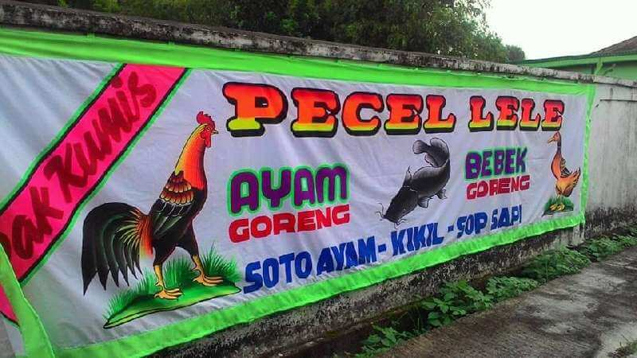

Pilih Barang
Daftar Barang:
Barang 1 - Contoh Spanduk
Barang 2 - Contoh Neon Box
Barang 3 - Contoh Stiker
Barang 4 - surat Undangan
Barang 5 - Contoh Ganci
Barang 6 - Contoh X banner
Barang 7 - Contoh Id Card
Barang 8 - Contoh Nota Costum
Barang 9 - Contoh Cutting Stiker
Barang 10 - Contoh Yasin
Barang 11 - RollBaner
Barang 12 - Contoh Decal motor
Barang 13 - Contoh Plakat Mug
Barang 14 - Contoh Stempel
Barang 15 - Contoh kotak saran
Barang 16- Contoh softcrover
Barang 17- Contoh Hardcover

Sepatu nyaman untuk olahraga.
Atur Ukuran Gambar: